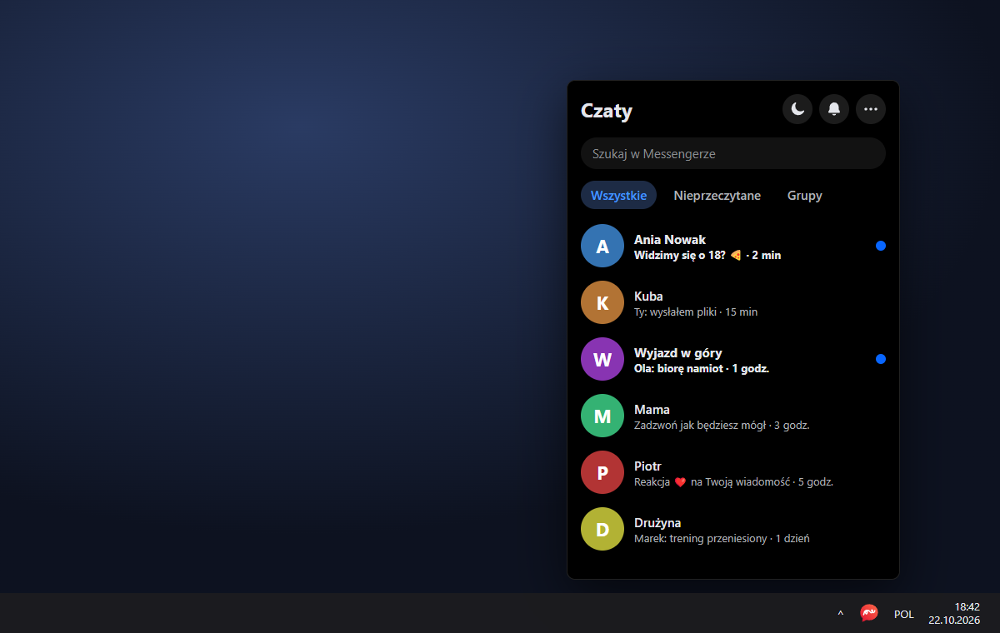

Messy
Meta shut down the Messenger desktop app and messenger.com. Messy brings Messenger back to the desktop: a click on the tray icon opens a compact chat panel right above the taskbar.
Meta zamknęła aplikację Messenger na komputer i stronę messenger.com. Messy przywraca Messengera na pulpit: kliknięcie ikony w zasobniku otwiera kompaktowy panel czatu tuż nad paskiem zadań.
Download for WindowsPobierz na WindowsWindows 10 and 11 · free · no admin rights needed. If SmartScreen warns you, click More info → Run anyway.
Windows 10 i 11 · za darmo · bez uprawnień administratora. Gdy SmartScreen ostrzeże, kliknij Więcej informacji → Uruchom mimo to.

- Lives in the trayPinned to the taskbar like Steam. Click to open, click away to hide.
- Only real messagesThe icon turns red for unread chats, not for Facebook likes or comments.
- Just the chatNo Facebook top bar; the chat fills the whole panel.
- OLED modeTrue black instead of Facebook's grey dark theme.
- One-click muteSilence notifications right from the Chats header.
- Updates itselfNew versions download in the background; one click to install.
- Mieszka w zasobnikuPrzypięty na pasku jak Steam. Klik otwiera, klik obok chowa.
- Tylko prawdziwe wiadomościIkona robi się czerwona przy nieprzeczytanych czatach, nie przy polubieniach czy komentarzach.
- Sam czatBez górnego paska Facebooka, czat wypełnia cały panel.
- Tryb OLEDCzysta czerń zamiast szarego ciemnego motywu Facebooka.
- Wyciszenie jednym kliknięciemProsto z nagłówka „Czaty”.
- Sam się aktualizujeNowe wersje pobierają się w tle, instalacja jednym kliknięciem.
Privacy
Prywatność
Messy only shows facebook.com/messages. Your login and messages go straight to Facebook. Messy has no servers, analytics or telemetry, and the code is open: github.com/Parallax373/messy. Full privacy notes.
Messy tylko wyświetla facebook.com/messages. Logowanie i wiadomości idą prosto do Facebooka. Messy nie ma serwerów, analityki ani telemetrii, a kod jest otwarty: github.com/Parallax373/messy. Szczegóły o prywatności.